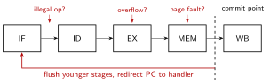
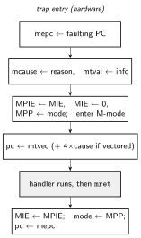

A trap transfers control to a handler. In RISC-V, an exception is synchronous with an instruction; an interrupt is asynchronous. Terminology differs across ISAs: x86’s fault/trap/abort classification should not be applied directly to RISC-V.
| Event | Saved PC / resume policy |
|---|---|
| recoverable page fault | retry the faulting instruction after repair |
ecall |
saved PC points to ecall; software advances it by 4 to
resume after it |
| interrupt | resume at the interrupted instruction boundary |
| unrecoverable error | recovery is platform-specific |
RISC-V integer division by zero returns a defined result rather than trapping. FP exceptional conditions normally set flags; see Floating Point Architecture.
An exception is precise when the saved state matches a clean point in program order: every older instruction has fully committed, and no younger instruction has changed any architectural state. The reported PC identifies exactly where execution logically stopped.
Precise state permits restart after a page fault, debugger inspection, and context switching. The faulting instruction must not expose incomplete ordinary architectural effects; restartable vector instructions and other specified cases may use additional progress state.
Different stages detect different exceptions, and detection order is not program order: an older instruction’s page fault (MEM, cycle ) may be detected after a younger instruction’s illegal opcode (ID, cycle ). Acting immediately on the younger one would be wrong.
Carry fault metadata with each instruction and suppress its side effects. Take the oldest fault at a boundary where older instructions can finish and younger effects can be discarded. The exact commit stage depends on the pipeline and where errors can be detected:

Take asynchronous interrupts at an architectural instruction boundary. Drain or discard in-flight work so the saved PC and state describe a valid restart point.
The same principle scales up: an OOO core marks the exception in the instruction’s reorder-buffer entry, and acts only when that entry reaches the ROB head at commit (Out of Order Execution and Register Renaming). Everything younger, including speculatively executed work, is squashed and the rename state rolled back, exactly the recovery machinery of a branch misprediction. Recovery structures can be shared, but precise exceptions still require correct side-effect suppression.
Machine-mode CSRs (accessed via Zicsr instructions of the RISC-V ISA) implement traps:
| CSR | Holds |
|---|---|
mtvec |
handler base address (+ mode: direct or vectored) |
mepc |
PC of the interrupted/faulting instruction |
mcause |
interrupt bit + cause code |
mtval |
extra info (faulting address, bad instruction bits) |
mstatus |
interrupt-enable stack: MIE, MPIE, MPP |
mie / mip |
per-source interrupt enable / pending bits |

CSR ordering and serialization depend on the implementation and the CSR; do not assume every CSR access drains every core’s ROB.
Trap entry copies MIE→MPIE and the previous privilege→MPP, clears MIE, and records trap state. This is one hardware save level, not automatic nesting support. Software must preserve trap CSRs before enabling nesting.
A handler must:
mepc by 4 for a handled ecall;
leave it unchanged when retrying a page fault.mret (or sret
for a supervisor trap).A function-call ABI save set alone is insufficient: an interrupt can
occur while any caller-saved register is live. Stack swapping through
mscratch requires a defined entry/nesting convention. Size
the frame for all saved registers and maintain ABI alignment.
An interrupt must be pending and individually enabled, and meet privilege/delegation rules. For an M-mode interrupt while already in M-mode, MIE must be set; while running below M-mode, MIE does not mask that higher-privilege interrupt. Software-managed nesting must preserve overwritten trap state.
mtime/mtimecmp raise the timer interrupt when
mtime >= mtimecmp; this is the OS scheduler’s tick.medeleg/mideleg route chosen traps directly to
S-mode so the OS handles its own page faults without firmware
round-trips.Interrupt latency includes masking intervals, time to a permitted boundary, pipeline recovery, and handler entry. Real-time analysis needs a worst-case bound for the configured system.
Interrupt controllers and optional fast/NMI mechanisms are platform-specific. PLIC/CLINT describe one common platform organization, not a requirement of every RISC-V system.
The trap mechanism generalizes one level up: a hypervisor runs whole guest OSes the way an OS runs processes, and traps are again the enforcement tool. The classical recipe is trap-and-emulate: run the guest OS deprivileged; every privileged action it attempts (writing a page table pointer, disabling interrupts) traps to the hypervisor, which emulates the effect against per-guest virtual state and returns.
The Popek–Goldberg theorem gives a sufficient condition for classical trap-and-emulate virtualization: sensitive instructions are a subset of privileged instructions, under its machine assumptions. It is not a general “if and only if” test for every virtualization method. Hardware virtualization adds guest state and controlled interception; not every sensitive operation must trap. RISC-V H provides HS/VS/VU execution and guest trap state.
Memory needs the trick twice: the guest OS translates guest-virtual
to guest-physical, and the hypervisor translates guest-physical to
host-physical. Nested (two-stage) page tables (RISC-V
hgatp, Intel EPT) let the hardware walker compose both
translations in one
TLB
fill, replacing the older software-maintained shadow page
tables that required trapping every guest page-table write. The
cost is walk length: a guest walk of
levels over a host walk of
levels touches up to
memory accesses, which is why virtualized TLB misses hurt and TLBs cache
the intermediate translations.
Author: Sai Govardhan (saigov14@gmail.com)
License: MIT.